New to tracker — actual advert age unknown
Prodej domu/vily, 100 m²
Prodej domu/vily, 100 m²
Not stated → 3,900,000 CZK
Original advert ↗Daily market update · 2026-11-20 · Ostrava + 15 km
Data limitation: Prices are advertised, not completed transaction prices. Disappeared adverts are NOT proof of sold or rented status. Search radius may be unverified for individual locations. "New" means first observed since a comparable complete Sreality scan, not independently verified as newly published. "New to tracker" may reflect expanded or partial portal coverage. Older Sreality IDs and known cross-lists are excluded. Additional monthly rental charges are not reliably supplied in these search cards.
Prodej domu/vily, 100 m²
Not stated → 3,900,000 CZK
Original advert ↗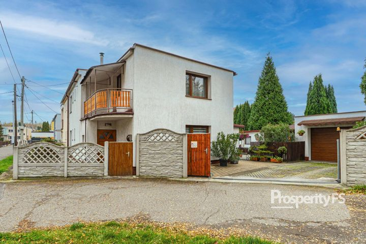
Prodej domu/vily, 115 m²
Not stated → 8,990,000 CZK
Original advert ↗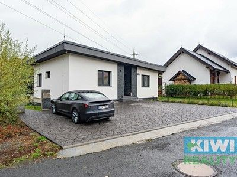
Palkovice, Frýdek-Místek
Not stated → 10,580,000 CZK
Original advert ↗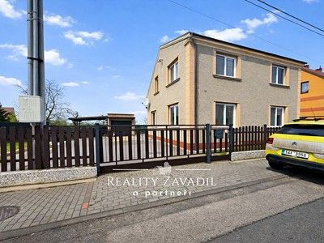
Zábřeh, Opava
Not stated → 6,000,000 CZK
Original advert ↗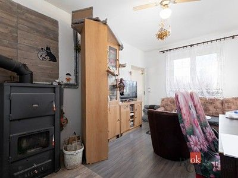
Poruba, Karviná
Not stated → 3,650,000 CZK
Original advert ↗
Václavovice, Ostrava-město
12,850,000 CZK → 12,780,000 CZK -0.54%
Original advert ↗
Mošnov, Nový Jičín
6,590,000 CZK → 6,590,000 CZK
Original advert ↗
Lutyně, Karviná
4,999,000 CZK → 4,799,000 CZK -4.0%
Original advert ↗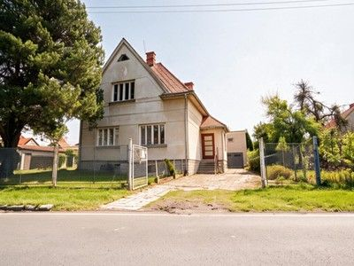
Petřvald 1-Petřvald, Nový Jičín
Not stated → 5,190,000 CZK
Original advert ↗
Borová, Opava
6,800,000 CZK → 6,800,000 CZK
Original advert ↗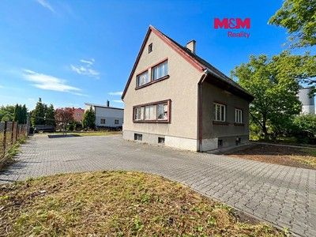
Frýdek-Místek, Frýdek-Místek
6,600,000 CZK → Not stated
Original advert ↗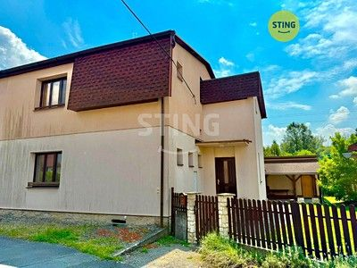
Frýdek, Frýdek-Místek
6,990,000 CZK → 6,490,000 CZK -7.15%
Original advert ↗
Darkovice, Opava
6,120,000 CZK → Not stated
Original advert ↗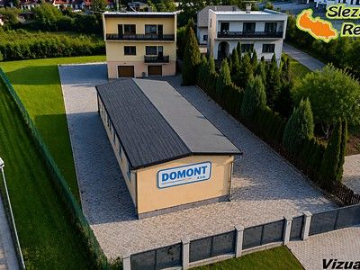
Muglinov, Ostrava-město
10,000,000 CZK → Not stated
Original advert ↗
Bartovice, Ostrava-město
9,300,000 CZK → 9,300,000 CZK
Original advert ↗
Nová Horka, Nový Jičín
2,790,000 CZK → Not stated
Original advert ↗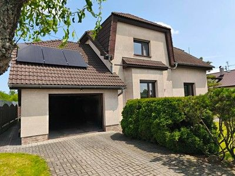
Petřvald, Karviná
8,800,000 CZK → Not stated
Original advert ↗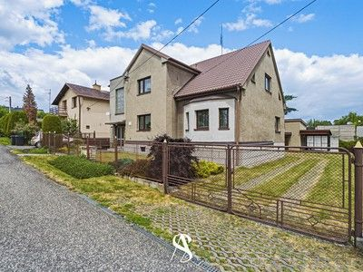
Rychvald, Karviná
6,290,000 CZK → Not stated
Original advert ↗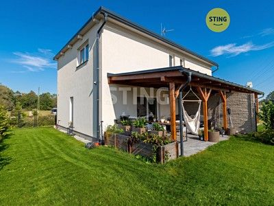
Dobrá, Frýdek-Místek
8,390,000 CZK → Not stated
Original advert ↗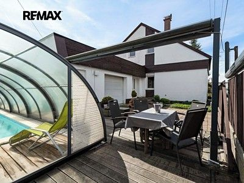
Krásné Pole, Ostrava-město
9,800,000 CZK → Not stated
Original advert ↗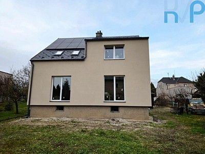
Kozmice, Opava
Not stated → 8,390,000 CZK
Original advert ↗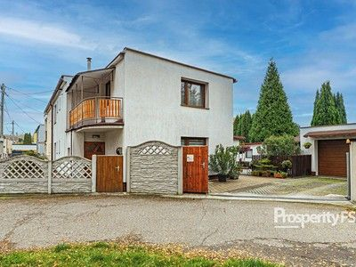
Hrabůvka, Ostrava-město
Not stated → 8,990,000 CZK
Original advert ↗Místek, Frýdek-Místek
Not stated → 4,950,000 CZK
Original advert ↗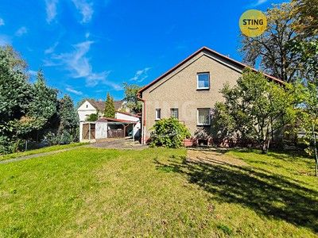
Karviná, Karviná
5,390,000 CZK → 4,990,000 CZK -7.42%
Original advert ↗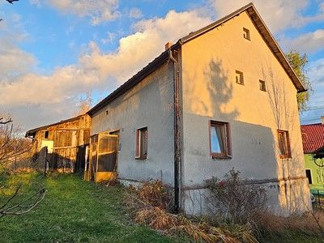
Stará Ves nad Ondřejnicí, Ostrava-město
Not stated → 3,600,000 CZK
Original advert ↗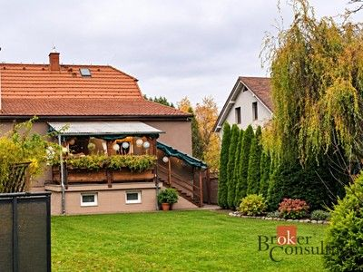
Kunčice, Ostrava-město
4,890,000 CZK → Not stated
Original advert ↗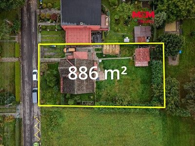
Horní Suchá, Karviná
4,650,000 CZK → Not stated
Original advert ↗
Fryštát, Karviná
7,990,000 CZK → 7,490,000 CZK -6.26%
Original advert ↗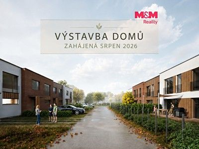
Kunčičky, Ostrava-město
9,450,000 CZK → Not stated
Original advert ↗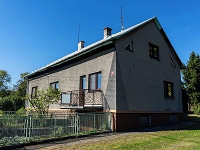
Prostřední Bludovice, Karviná
6,500,000 CZK → Not stated
Original advert ↗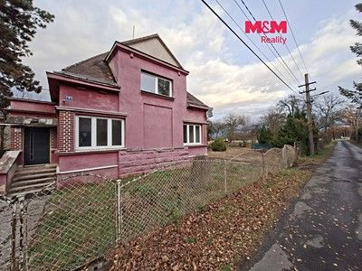
Vratimov, Ostrava-město
Not stated → 3,900,000 CZK
Original advert ↗
Místek, Frýdek-Místek
6,800,000 CZK → 6,450,000 CZK -5.15%
Original advert ↗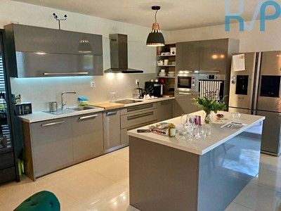
Borová, Opava
12,990,000 CZK → 12,490,000 CZK -3.85%
Original advert ↗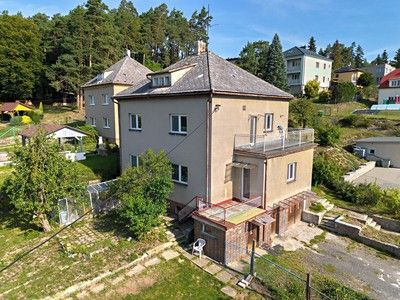
Vřesina, Ostrava-město
6,400,000 CZK → Not stated
Original advert ↗